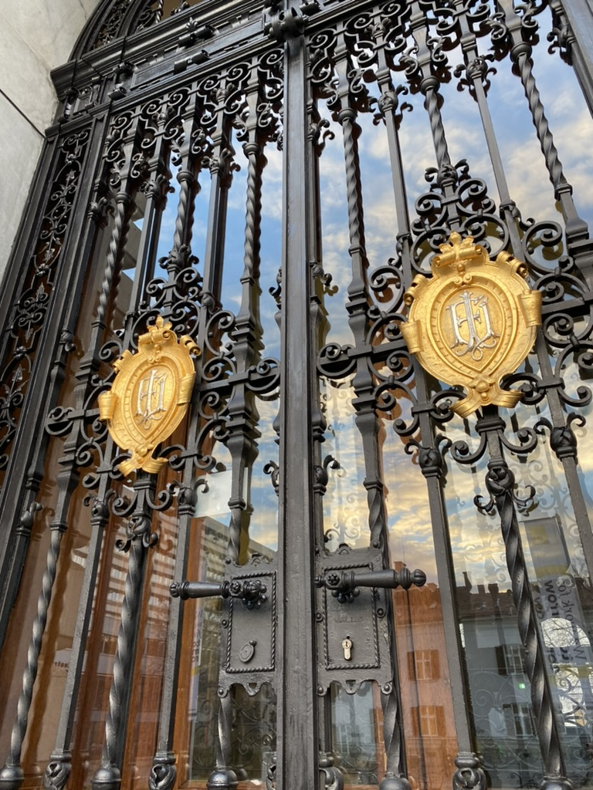
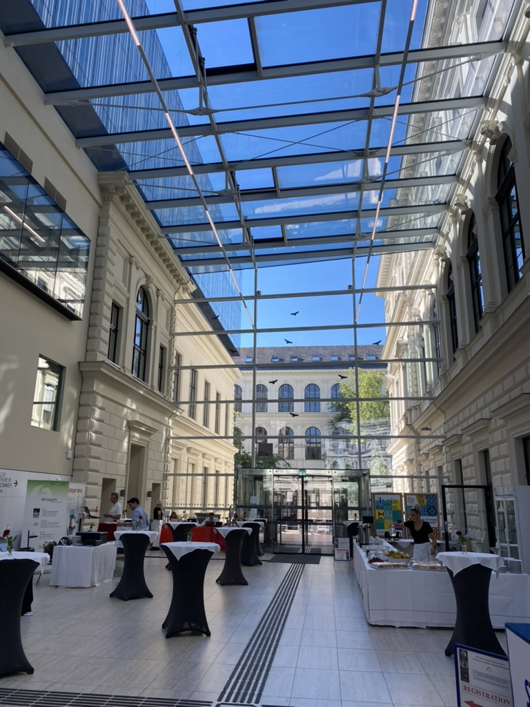
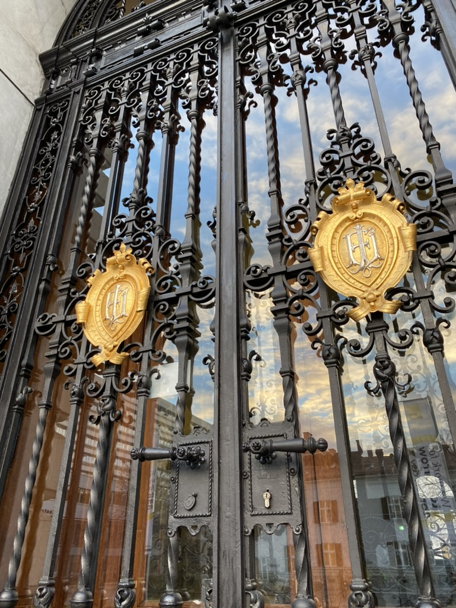
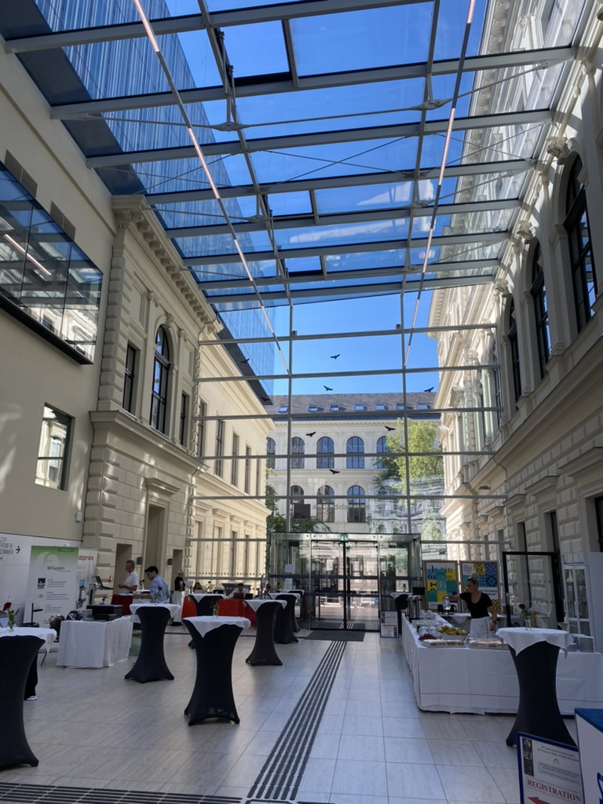

Architektur in Graz - Die Universität Graz
 




Die Karl-Franzens-Universität Graz, auch bekannt als Uni Graz, ist nicht nur eine der ältesten und größten Universitäten Österreichs, sondern auch ein architektonisch vielfältiges Ensemble, das von historischen Prachtbauten bis zu moderner Architektur reicht. Gegründet im Jahr 1585, blickt sie auf eine lange und ereignisreiche Geschichte zurück, die sich in ihren Gebäuden widerspiegelt.
Das Hauptgebäude am Universitätsplatz ist ein beeindruckendes Beispiel des Historismus und strahlt akademische Würde aus. Mit seiner markanten Fassade und den weitläufigen Innenhöfen bildet es das Herzstück des Campus. Aber die Uni Graz ist mehr als nur ein Hauptgebäude. Über die Stadt verteilt finden sich zahlreiche Fakultäten und Institute, die jeweils ihren eigenen architektonischen Charakter haben. Von alten, ehrwürdigen Palais, die in Universitätsgebäude umgewandelt wurden, bis hin zu funktionalen, modernen Bauten, die den neuesten Forschungsansprüchen gerecht werden – die Architektur der Universität Graz erzählt die Geschichte ihrer Entwicklung und Anpassung an neue Zeiten.
Besonders hervorzuheben ist die Bibliothek der Universität, ein Ort des Wissens und der Forschung, der ebenfalls architektonisch beeindruckt. Die Integration von Grünflächen und studentischen Treffpunkten in die Campusgestaltung trägt ebenfalls zur besonderen Atmosphäre bei.
Fun-Facts zur Universität Graz:
- Alter Ehrwürdigkeit: Sie ist die zweitälteste Universität Österreichs, gegründet vom Erzherzog Karl II. von Innerösterreich.
- Nobelpreisträger-Schmiede: Gleich drei Nobelpreisträger waren an der Uni Graz tätig oder haben hier studiert: Fritz Pregl (Chemie, 1923), Otto Loewi (Medizin, 1936) und Victor Franz Hess (Physik, 1936).
- "Uni-Viertel": Rund um das Hauptgebäude hat sich ein lebhaftes "Uni-Viertel" entwickelt, das von Cafés, Bars und Studentenkneipen geprägt ist und zum Verweilen einlädt.
- Gelebte Geschichte: In den alten Gebäuden der Universität spürt man förmlich die Jahrhunderte des Lernens und der Forschung, die hier stattgefunden haben.